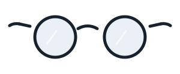
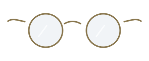
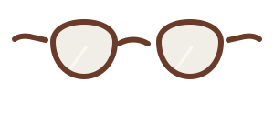
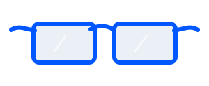
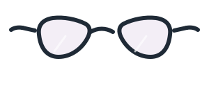
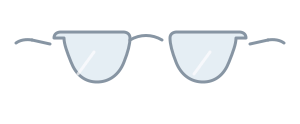
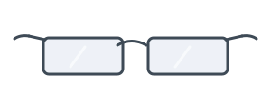
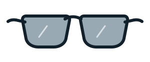
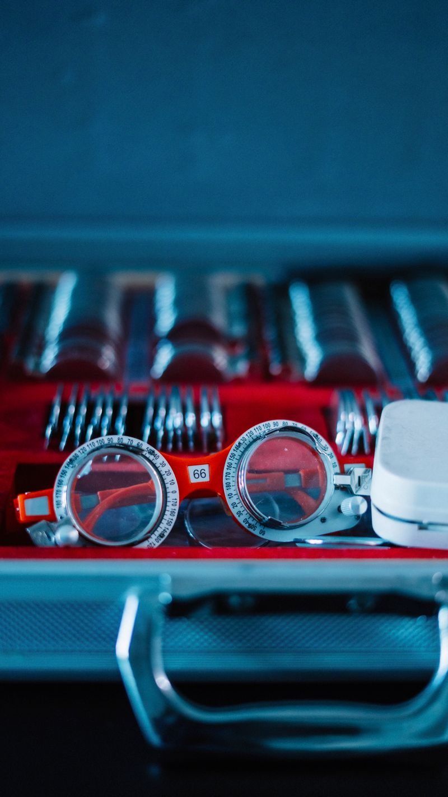
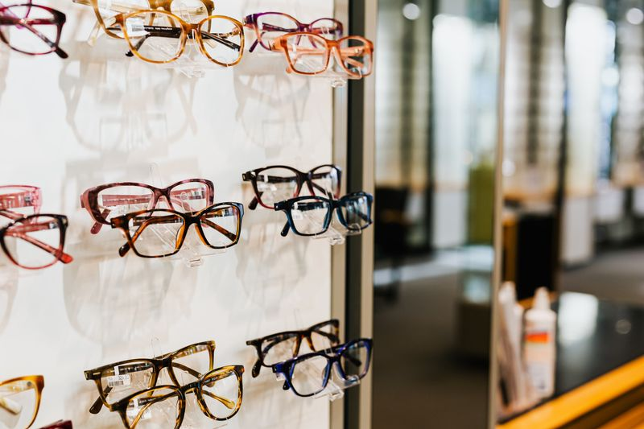

- 0,1
E
- 0,2
VER BIEN
- 0,4
NO ES UN LUJO
- 0,6
ES LA PRIMERA HERRAMIENTA
- 0,8
QUE USAS CADA DÍA SIN DARTE CUENTA
- 1,0
ÓPTICA SEXTANTE · RÚA NOVA DO FARO, 14 · PONTEVEDRA · DESDE 1998
Óptica de barrio con taller propio. Te medimos la vista con calma, te enseñamos lo que hay y te decimos el precio antes de montar nada.
La revisión visual de una óptica no es una consulta médica. Si vemos algo que no nos corresponde, te lo decimos y te mandamos al oftalmólogo.
- 0años en la misma esquina
- 0dura una revisión completa
- 0monturas en el escaparate
- 0para tener las gafas montadas
01 — Monturas
Ocho que nos gustan
Del escaparate entero, estas son las que más recomendamos. Todas se pueden graduar, y el precio de la montura no incluye las lentes: eso se calcula aparte según tu graduación.
8 monturas
-

Roda
Acetato · redonda · unisex
135 €
-

Croa
Metal · redonda · varilla fina
155 €
-

Lombo
Acetato · pantos · cara ancha
145 €
-

Illa
Acetato · cuadrada · color
129 €
-

Gaivota
Acetato · ojo de gato
165 €
-

Faro
Metal · aviador · ligera
175 €
-

Ponte
Titanio · rectangular · 18 g
210 €
-

Solaina
Sol · acetato · graduable
139 €
Modelos y precios inventados para esta demostración. Los dibujos son propios: no hay fotos de producto de ninguna marca real.
02 — Tu graduación
Qué significan esos números
En la receta pone algo como −2,25 (−0,50) 180° y nadie te lo explica. Mueve la barra y verás, más o menos, cómo se ve un texto sin corregir según la miopía.
El plan de la tarde: bajar a comprar el pan, mirar el cartel del cine de la esquina y leer el número del portal sin acercarte.
0,00 dioptrías · así lo ves con tu corrección puesta
Es una ilustración, no una prueba: el desenfoque real depende de muchas cosas y no se mide en una pantalla. Nadie puede graduarse la vista con una web.
- Esfera
- El primer número. Negativo, miopía; positivo, hipermetropía.
- Cilindro
- El del paréntesis. Es el astigmatismo: la vista no enfoca igual en todos los ejes.
- Eje
- Los grados. Dice en qué orientación va ese cilindro, de 0 a 180.
- Adición
- Aparece a partir de los 45 y pico. Es lo que se suma para ver de cerca.
03 — La revisión
Media hora, sin prisa
-
00:00
Qué te pasa
Antes de encender nada, preguntamos: a qué distancia trabajas, cuántas horas de pantalla, si conduces de noche, qué gafas traes puestas y desde cuándo.
-
00:05
Lo que ya tienes
Medimos tus gafas actuales en el frontofocómetro. Muchas veces el problema no es la vista: es una montura torcida o una lente rayada.
-
00:10
La carta
Agudeza de lejos y de cerca, con y sin corrección, y prueba de lentes hasta que la letra pequeña deja de bailar.
-
00:22
Cómo trabajan juntos
Los dos ojos por separado y luego a la vez: enfoque, convergencia y si uno está haciendo el trabajo del otro.
-
00:30
Lo que te llevas
La graduación por escrito, aunque no compres aquí, y un presupuesto cerrado si decides montar. Sin compromiso y sin llamadas después.

04 — Lentes
El precio, antes de montar
Precios por par, con antirreflejante y endurecido incluidos. La graduación alta sube el precio porque sube el índice de la lente; te lo decimos en el momento, no al recoger.
| Lente | Desde | Para quién |
|---|---|---|
| Monofocal | 60 € | Una sola distancia. La de toda la vida. |
| Monofocal de índice alto | 110 € | Graduaciones fuertes, para que el cristal no abulte. |
| Progresiva | 190 € | Lejos, intermedio y cerca en la misma lente. |
| Ocupacional de oficina | 150 € | Pantalla y papel; no vale para conducir. |
| Fotocromática | +70 € | Se oscurece al sol. No sustituye a una gafa de sol dentro del coche. |
| Filtro para pantallas | +30 € | Quita algo de reflejo. No prometemos milagros con el cansancio. |
- Ajuste y limpiezaGratis, siempre
- Montaje en tu propia montura25 €
- Cambio de plaquetas o varilladesde 15 €
- Adaptación de lentes de contacto40 €
05 — Taller
Se montan aquí, en la trastienda
Tenemos biseladora propia, así que la mayoría de las gafas salen en 48 horas y los arreglos pequeños, en el momento. Somos tres.
-
Marta Xesteira
Óptica-optometrista · contactología
Lleva la óptica desde 2006. Es quien hace la mayoría de las revisiones y la que más pelea con las adaptaciones difíciles de lentillas.
-
Álvaro Sendón
Óptico-optometrista · progresivas
Se ocupa de las progresivas y de las graduaciones que cambian mucho. Tiene paciencia infinita para volver a medir por tercera vez.
-
Iria Coteliño
Taller y montaje
Bisela, monta y endereza. Si alguna vez te has sentado encima de las gafas, es la persona que las devuelve a su sitio.

Personas inventadas para esta demostración. Las monturas que acompañan a cada ficha son dibujos propios del catálogo, no retratos.
06 — Cita
Rúa Nova do Faro, 14
Comprobando el horario…
Rúa Nova do Faro, 14 · bajo36002 Pontevedra
986 00 00 21
hola@opticasextante.example
- Lunes a viernes
- 10:00–13:30 · 16:30–20:30
- Sábado
- 10:30–13:30
- Domingo
- Cerrado
En la acera de los pares, al lado de la parada de taxis. Entrada sin escalón y local en planta baja. Aparcamiento de rotación a 80 metros.
El mapa se carga solo si lo pides: hasta entonces esta web no llama a ningún servidor de terceros.